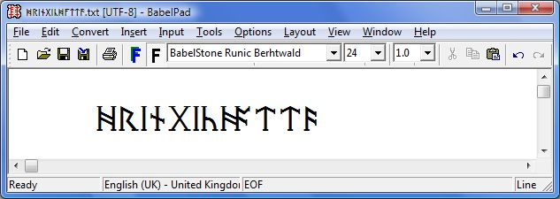

These are a set of six Runic fonts that each cover the subset of 34 characters in the Unicode Runic block that are used in Frisian and Anglo-Saxon inscriptions from the 5th to 11th centuries :
Since version 1.06 all fonts also cover three runes devised by J. R. R. Tolkien (U+16F1 ... U+16F3) and five cryptogrammic runes used on the Franks Casket (U+16F4 ... U+16F8), which were added in Unicode 7.0 (June 2014). A transcription of the runic text of the Franks Casket using the Unicode 7.0 characters is available here.
These fonts use OpenType features to implement kerning, ligatures (bind runes and mirror runes), mirrored glyphs for Right-to-Left contexts, and stylistic alternative glyphs, as described below.
BabelStone Runic Beagnoth (24 points)
BabelStone Runic Beorhtnoth (24 points)
BabelStone Runic Beorhtric (24 points)
BabelStone Runic Beowulf (24 points)
BabelStone Runic Berhtwald (24 points)
BabelStone Runic Byrhtferth (24 points)
The tables below render each character in the specified BabelStone Anglo-Saxon Runic font, either using the font installed on your local machine or using WOFF fonts if the font is not installed on your local machine (OpenType features such as ligatures and kerning may not work if your browser is relying on the WOFF fonts; and WOFF fonts won't work in IE8 or earlier).
| Code Point | Character Name | Rune Name | BabelStone Runic | |||||
|---|---|---|---|---|---|---|---|---|
| Beagnoth | Beorhtnoth | Beorhtric | Beowulf | Berhtwald | Byrhtferth | |||
| 16A0 | RUNIC LETTER FEHU FEOH FE F | feoh | ᚠ | ᚠ | ᚠ | ᚠ | ᚠ | ᚠ |
| 16A2 | RUNIC LETTER URUZ UR U | ūr | ᚢ | ᚢ | ᚢ | ᚢ | ᚢ | ᚢ |
| 16A3 | RUNIC LETTER YR | ȳr | ᚣ | ᚣ | ᚣ | ᚣ | ᚣ | ᚣ |
| 16A6 | RUNIC LETTER THURISAZ THURS THORN | þorn | ᚦ | ᚦ | ᚦ | ᚦ | ᚦ | ᚦ |
| 16A9 | RUNIC LETTER OS O | ōs | ᚩ | ᚩ | ᚩ | ᚩ | ᚩ | ᚩ |
| 16AA | RUNIC LETTER AC A | āc | ᚪ | ᚪ | ᚪ | ᚪ | ᚪ | ᚪ |
| 16AB | RUNIC LETTER AESC | æsċ | ᚫ | ᚫ | ᚫ | ᚫ | ᚫ | ᚫ |
| 16B1 | RUNIC LETTER RAIDO RAD REID R | rād | ᚱ | ᚱ | ᚱ | ᚱ | ᚱ | ᚱ |
| 16B3 | RUNIC LETTER CEN | ċēn | ᚳ | ᚳ | ᚳ | ᚳ | ᚳ | ᚳ |
| 16B7 | RUNIC LETTER GEBO GYFU G | ġyfu | ᚷ | ᚷ | ᚷ | ᚷ | ᚷ | ᚷ |
| 16B8 | RUNIC LETTER GAR | gār | ᚸ | ᚸ | ᚸ | ᚸ | ᚸ | ᚸ |
| 16B9 | RUNIC LETTER WUNJO WYNN W | wyn | ᚹ | ᚹ | ᚹ | ᚹ | ᚹ | ᚹ |
| 16BB | RUNIC LETTER HAEGL H | hæġl | ᚻ | ᚻ | ᚻ | ᚻ | ᚻ | ᚻ |
| 16BE | RUNIC LETTER NAUDIZ NYD NAUD N | nȳd | ᚾ | ᚾ | ᚾ | ᚾ | ᚾ | ᚾ |
| 16C1 | RUNIC LETTER ISAZ IS ISS I | īs | ᛁ | ᛁ | ᛁ | ᛁ | ᛁ | ᛁ |
| 16C4 | RUNIC LETTER GER | ġēr | ᛄ | ᛄ | ᛄ | ᛄ | ᛄ | ᛄ |
| 16C7 | RUNIC LETTER IWAZ EOH | ēōh | ᛇ | ᛇ | ᛇ | ᛇ | ᛇ | ᛇ |
| 16C8 | RUNIC LETTER PERTHO PEORTH P | peorð | ᛈ | ᛈ | ᛈ | ᛈ | ᛈ | ᛈ |
| 16C9 | RUNIC LETTER ALGIZ EOLHX | eolh, eolhseċġ | ᛉ | ᛉ | ᛉ | ᛉ | ᛉ | ᛉ |
| 16CB | RUNIC LETTER SIGEL LONG-BRANCH-SOL S | siġel | ᛋ | ᛋ | ᛋ | ᛋ | ᛋ | ᛋ |
| 16CF | RUNIC LETTER TIWAZ TIR TYR T | tīr | ᛏ | ᛏ | ᛏ | ᛏ | ᛏ | ᛏ |
| 16D2 | RUNIC LETTER BERKANAN BEORC BJARKAN B | beorc | ᛒ | ᛒ | ᛒ | ᛒ | ᛒ | ᛒ |
| 16D6 | RUNIC LETTER EHWAZ EH E | eh, eoh | ᛖ | ᛖ | ᛖ | ᛖ | ᛖ | ᛖ |
| 16D7 | RUNIC LETTER MANNAZ MAN M | man | ᛗ | ᛗ | ᛗ | ᛗ | ᛗ | ᛗ |
| 16DA | RUNIC LETTER LAUKAZ LAGU LOGR L | lagu | ᛚ | ᛚ | ᛚ | ᛚ | ᛚ | ᛚ |
| 16DD | RUNIC LETTER ING | ing | ᛝ | ᛝ | ᛝ | ᛝ | ᛝ | ᛝ |
| 16DE | RUNIC LETTER DAGAZ DAEG D | dæġ | ᛞ | ᛞ | ᛞ | ᛞ | ᛞ | ᛞ |
| 16DF | RUNIC LETTER OTHALAN ETHEL O | ēþel | ᛟ | ᛟ | ᛟ | ᛟ | ᛟ | ᛟ |
| 16E0 | RUNIC LETTER EAR | ear | ᛠ | ᛠ | ᛠ | ᛠ | ᛠ | ᛠ |
| 16E1 | RUNIC LETTER IOR | ior | ᛡ | ᛡ | ᛡ | ᛡ | ᛡ | ᛡ |
| 16E2 | RUNIC LETTER CWEORTH | cweorð | ᛢ | ᛢ | ᛢ | ᛢ | ᛢ | ᛢ |
| 16E3 | RUNIC LETTER CALC | calc | ᛣ | ᛣ | ᛣ | ᛣ | ᛣ | ᛣ |
| 16E4 | RUNIC LETTER CEALC | cealc | ᛤ | ᛤ | ᛤ | ᛤ | ᛤ | ᛤ |
| 16E5 | RUNIC LETTER STAN | stān | ᛥ | ᛥ | ᛥ | ᛥ | ᛥ | ᛥ |
| 16EB | RUNIC SINGLE PUNCTUATION | ᛫ | ᛫ | ᛫ | ᛫ | ᛫ | ᛫ | |
| 16EC | RUNIC MULTIPLE PUNCTUATION | ᛬ | ᛬ | ᛬ | ᛬ | ᛬ | ᛬ | |
| 16ED | RUNIC CROSS PUNCTUATION | ᛭ | ᛭ | ᛭ | ᛭ | ᛭ | ᛭ | |
| 16F1 | RUNIC LETTER K | ᛱ | ᛱ | ᛱ | ᛱ | ᛱ | ᛱ | |
| 16F2 | RUNIC LETTER SH | ᛲ | ᛲ | ᛲ | ᛲ | ᛲ | ᛲ | |
| 16F3 | RUNIC LETTER OO | ᛳ | ᛳ | ᛳ | ᛳ | ᛳ | ᛳ | |
| 16F4 | RUNIC LETTER FRANKS CASKET OS | ᛴ | ᛴ | ᛴ | ᛴ | ᛴ | ᛴ | |
| 16F5 | RUNIC LETTER FRANKS CASKET IS | ᛵ | ᛵ | ᛵ | ᛵ | ᛵ | ᛵ | |
| 16F6 | RUNIC LETTER FRANKS CASKET EH | ᛶ | ᛶ | ᛶ | ᛶ | ᛶ | ᛶ | |
| 16F7 | RUNIC LETTER FRANKS CASKET AC | ᛷ | ᛷ | ᛷ | ᛷ | ᛷ | ᛷ | |
| 16F8 | RUNIC LETTER FRANKS CASKET AESC | ᛸ | ᛸ | ᛸ | ᛸ | ᛸ | ᛸ | |
All fonts include a number of ligatures (bind runes) that can be activated by inserting a Zero Width Joiner character (U+200D or ‍ in HTML) between the characters to be ligatured (e.g. <16BB 200D 16D6 200D 16DA> produces the HEL ligature). All attested Anglo-Saxon bind runes that I know of are included, but if there are any of others that you need, please let me know.
Mirror runes (where the glyph is mirrored around the central stem) are implememented as ligatures of the same rune doubled (e.g. <16A2 200D 16A2> produces the mirrored form of the ur rune).
N.B. The ligatures in the "Unicode Runic Text" examples below render correctly with Internet Explorer version 8 and later under Windows 7 and later if the BabelStone fonts are installed (OpenType features may not work if your browser is relying on the WOFF fonts), but may not render as ligatures with other operating system / browser combinations (e.g. ligatures do not work with Chrome version 33 under Windows 7).
Example 1 : Dragon's Head Knife Mount with Cryptic Runic Inscription

Screenshot of BabelStone Runic Beowulf at 24 points
Unicode Runic Text
ᛋᛒᛖᚱᚫᛞᚻᛏᛇᛒᚳᚪᛁ ᛖᚱᚻᚪᛞᚫᛒᛋ
Note ligatured runes E/R, H/A and D/Æ
Example 2 : The Wheatley Hill Ring Inscription

Screenshot of BabelStone Runic Berhtwald at 24 points

Unicode Runic Text
[ᚻ]ᚱᛁᚾᚷᛁᚳᚻᚪᛏᛏ[ᚫ]
Note ligatured runes H/A
Example 3 : The Undley Bracteate Inscription

Screenshot of BabelStone Runic Beorhtric at 24 points
Unicode Runic Text
ᚷᚫᚷᚩᚷᚫ ᛗᚫᚷᚫ ᛗᛖᛞᚢ
Note ligatured runes G/Æ and G/O (the text on the bracteate runs right-to-left, and should be rendered right-to-left on Firefox, but not necessarily on other browsers)
Example 4 : Mirror Rune Stamp on Cremation Urns from the Spong Hill Saxon Cemetery

Screenshot of BabelStone Runic Beorhtric at 24 points
Unicode Runic Text
ᚫᚫᛚᛚᚢᚢ
The word ælu "ale" written in mirror runes (implemented by writing each letter twice, with a Zero Width Joiner character [U+200D] in between)
Example 5 : Cover of The Hobbit by J. R. R. Tolkien

Screenshot of BabelStone Runic Beowulf at 24 points
Unicode Runic Text
ᚦᛖ᛫ᚻᚩᛒᛒᛁᛏ᛬ᚩᚱ᛬ᚦᛖᚱᛖ᛫ᚫᚾᛞ᛫ᛒᚫᚳᛱ᛫ᚫᚷᚫᛁᚾ᛬
ᛒᛖᛁᛝ᛫ᚦᛖ᛫ᚱᛖᚳᚩᚱᛞ᛫ᚩᚠ᛫ᚫ᛫ᚣᛠᚱᛋ᛫ᛁᚩᚢᚱᚾᛖᚣ᛫
ᛗᚫᛞᛖ᛫ᛒᚣ᛫ᛒᛁᛚᛒᚩ᛫ᛒᚫᚷᚷᛁᚾᛋ᛫ᚩᚠ᛫ᚻᚩᛒᛒᛁᛏᚩᚾ᛬
ᚳᚩᛗᛈᛁᛚᛖᛞ᛫ᚠᚱᚩᛗ᛫ᚻᛁᛋ᛫ᛗᛖᛗᚩᛁᚱᛋ᛫ᛒᚣ᛫ᛁ᛫ᚱ᛫ᚱ᛫
ᛏᚩᛚᛱᛁᛖᚾ᛬ᚫᚾᛞ᛫ᛈᚢᛒᛚᛁᛋᚻᛖᛞ᛫ᛒᚣ᛫ᚷᛇᚱᚷᛖ᛫
ᚫᛚᛚᛖᚾ᛫ᚫᚾᛞ᛫ᚢᚾᚹᛁᚾ᛫ᛚᛏᛞ᛬
This text shows the contrastive use of letters 'c' and 'k' (but 'sh' is written as two letters)
All fonts except for BabelStone Runic Berhtwald provide kerning between runes where appropriate. N.B. Kerning is not applied in Internet Explorer 11 or Chrome 33 under Windows 7; and kerning for runes added in Unicode 7.0 (U+16F1..U+16F8) does not seem to be applied by any application that I have tested under Windows 7.
BabelStone Runic Beowulf and BabelStone Runic Beohtric include stylistic alternate glyphs for some characters using the OpenType salt (Stylistic Alternates) feature. Some applications may allow you to select a particular stylistic alternate glyph, but I do not have access to any such application, so I have not been able to test that this feature has been implemented correctly in my fonts.
Runic inscriptions mostly read left-to-right (LTR), but sometimes read right-to-left (RTL) or are sometimes written boustrophedon (left-to-right and right-to-left in alternate lines); when written right-to-left the glyphs are normally mirrored, as for example on the front of the Franks Casket shown below, where the top line is written left-to-right with normal glyphs, and the bottom line is written right-to-left with mirrored glyphs.
You can cause a stretch of Runic text to be displayed in right-to-left order by putting U+202D (LEFT-TO-RIGHT OVERRIDE [RLO]) at the start of the text and putting U+202C (POP DIRECTIONAL FORMATTING [PDF]) at the end of the text (PDF is not required at the end of a line, as the directionality of the text is reset at a new line, but for the same reason RLO is required at the start of each line of RTL text).
The BabelStone Anglo-Saxon Runic fonts all include mirrored glyphs for use in Right-to-Left contexts. The mirrored glyphs should be applied by activating the rtlm (Right-to-left mirrored forms) OpenType feature (see discussion on "Left-to-right and right-to-left text" at Advanced Typographic Extensions - OpenType Layout) when the text is marked as RTL as descibed in the previous paragraph, but this feature appears not to be supported by Windows 7. Internet Explorer (tested with v. 11) and Google Chrome (tested with v. 44) do not apply the rtlm feature, but Mozilla Firefox (tested with v. 33) does apply glyph mirroring in RTL contexts.
Example of Right-to-Left Runic Text
From the Front of the Franks Casket

ᚹᚪᚱᚦᚷᚪ᛬ᛋᚱᛁᚳᚷᚱᚩᚱᚾᚦᚫᚱᚻᛖᚩᚾᚷᚱᛖᚢᛏᚷᛁᛋᚹᚩᛗ
<RLO> WARÞ GA:SRIC GRORN ÞÆR HE ON GREUT GISWOM <PDF>
The runes should be laid out right-to-left, but glyph-mirroring may not be applied, depending on your browser (works correctly in Mozilla Firefox, as shown in the screenshot below)
| Script | Language | Features | Explanation |
|---|---|---|---|
| Runic <runr> | Default <dflt> | Glyph Composition Decomposition <ccmp> | For producing ligatured "bind runes". |
| Kerning <kern> | Kerning of Runic letters. | ||
| Right-to-Left Mirrored Forms <rtlm> | Mirrored glyphs for right-to-left layout. | ||
| Stylistic Alternates <salt> | Variant glyph forms for some Runic letters. |
| Font | Version | Date | Notes |
|---|---|---|---|
| BabelStone Runic Beagnoth | 1.00 | 2010-01-01 | Initial release |
| 1.01 | 2010-01-05 | ||
| 1.02 | 2010-07-03 | ||
| 1.03 | 2010-07-04 | ||
| 1.04 | 2013-11-06 | Licensed under SIL Open Font License 1.1 | |
| 1.06 | 2014-04-01 | Added three runes devised by J. R. R. Tolkien (U+16F1 ... U+16F3) and five cryptogrammic runes used on the Franks Casket (U+16F4 ... U+16F8) which were added in Unicode 7.0 | |
| 7.000 | 2018-02-15 | Changed version numbering | |
| 7.001 | 2018-07-13 | Added missing OpenType substitutions for mirrored forms of U+16F1 through 16F8. | |
| BabelStone Runic Beorhtnoth | 1.00 | 2010-01-01 | Initial release |
| 1.01 | 2010-01-05 | ||
| 1.02 | 2010-01-30 | ||
| 1.03 | 2010-07-03 | ||
| 1.04 | 2010-07-04 | ||
| 1.05 | 2013-11-06 | Licensed under SIL Open Font License 1.1 | |
| 1.06 | 2014-04-01 | Added three runes devised by J. R. R. Tolkien (U+16F1 ... U+16F3) and five cryptogrammic runes used on the Franks Casket (U+16F4 ... U+16F8) which were added in Unicode 7.0 | |
| 7.000 | 2018-02-15 | Changed version numbering | |
| 7.001 | 2018-07-13 | Added missing OpenType substitutions for mirrored forms of U+16F1 through 16F8. | |
| BabelStone Runic Beorhtric | 1.00 | 2010-01-01 | Initial release |
| 1.01 | 2010-01-05 | ||
| 1.02 | 2010-01-30 | ||
| 1.03 | 2010-07-03 | ||
| 1.04 | 2010-07-04 | ||
| 1.05 | 2013-11-06 | Licensed under SIL Open Font License 1.1 | |
| 1.06 | 2014-04-01 | Added three runes devised by J. R. R. Tolkien (U+16F1 ... U+16F3) and five cryptogrammic runes used on the Franks Casket (U+16F4 ... U+16F8) which were added in Unicode 7.0 | |
| 7.000 | 2018-02-15 | Changed version numbering | |
| 7.001 | 2018-07-13 | Added missing OpenType substitutions for mirrored forms of U+16F1 through 16F8. | |
| BabelStone Runic Beowulf | 1.00 | 2010-01-01 | Initial release |
| 1.01 | 2010-01-05 | ||
| 1.02 | 2010-07-03 | ||
| 1.03 | 2010-07-04 | ||
| 1.04 | 2013-11-06 | Licensed under SIL Open Font License 1.1 | |
| 1.06 | 2014-04-01 | Added three runes devised by J. R. R. Tolkien (U+16F1 ... U+16F3) and five cryptogrammic runes used on the Franks Casket (U+16F4 ... U+16F8) which were added in Unicode 7.0 | |
| 7.000 | 2018-02-15 | Changed version numbering | |
| 7.001 | 2018-07-13 | Added missing OpenType substitutions for mirrored forms of U+16F1 through 16F8. | |
| BabelStone Runic Berhtwald | 1.00 | 2010-01-01 | Initial release |
| 1.01 | 2010-01-05 | ||
| 1.02 | 2010-07-03 | ||
| 1.03 | 2010-07-04 | ||
| 1.04 | 2013-11-06 | Licensed under SIL Open Font License 1.1 | |
| 1.06 | 2014-04-01 | Added three runes devised by J. R. R. Tolkien (U+16F1 ... U+16F3) and five cryptogrammic runes used on the Franks Casket (U+16F4 ... U+16F8) which were added in Unicode 7.0 | |
| 7.000 | 2018-02-15 | Changed version numbering | |
| BabelStone Runic Byrhtferth | 1.00 | 2010-01-01 | Initial release |
| 1.01 | 2010-01-05 | ||
| 1.02 | 2010-07-03 | ||
| 1.03 | 2010-07-04 | ||
| 1.04 | 2013-11-06 | Licensed under SIL Open Font License 1.1 | |
| 1.06 | 2014-04-01 | Added three runes devised by J. R. R. Tolkien (U+16F1 ... U+16F3) and five cryptogrammic runes used on the Franks Casket (U+16F4 ... U+16F8) which were added in Unicode 7.0 | |
| 7.000 | 2018-02-15 | Changed version numbering | |
| 7.001 | 2018-07-13 | Added missing OpenType substitutions for mirrored forms of U+16F1 through 16F8. |
All BabelStone Anglo-Saxon Runic fonts on this page are licensed under the SIL Open Font License 1.1, which means you are free to use them for personal or commercial purposes, and to redistribute them by themselves or as part of a free or commercial software package, just as long as you do not sell the fonts on their own. The license also allows you to modify the fonts in any way you like, as long as the modified fonts do not use "BabelStone" in their name. Please read the license for details.
BabelStone Runic | BabelStone Runic Elder Futhark | BabelStone Younger Futhark Runes | BabelStone Runic Staveless | BabelStone Runic Dotted | BabelStone Anglo-Saxon Runes | BabelStone Moon Runes